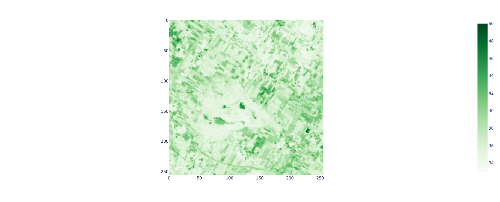
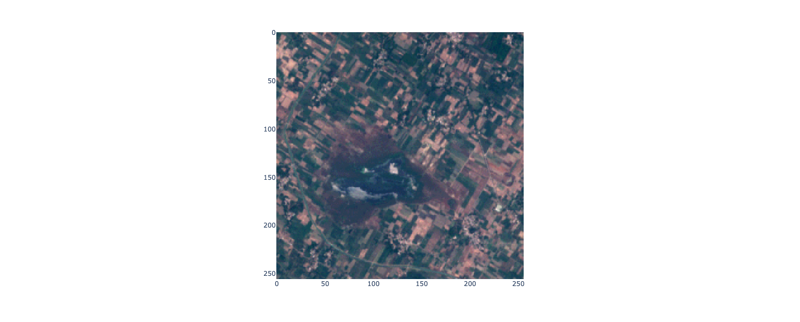
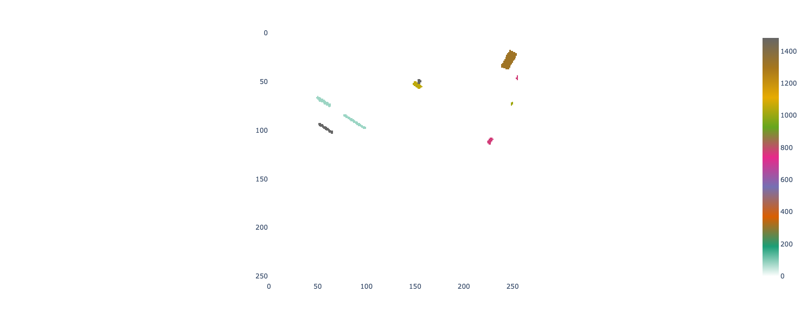
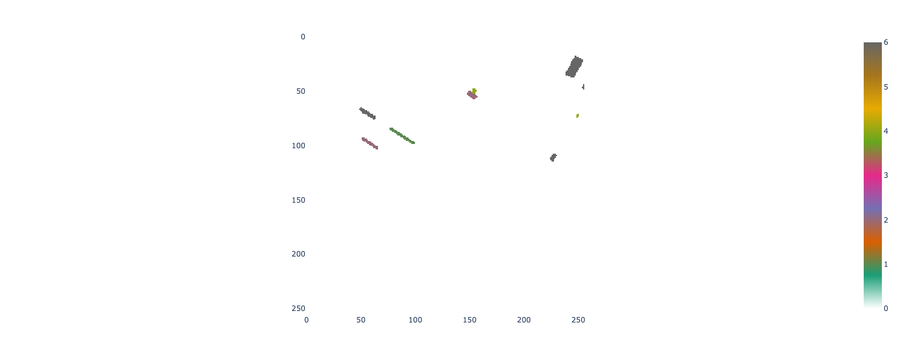
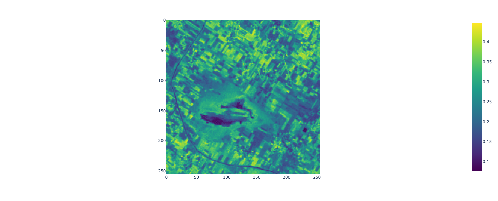

Often, datasets need to go through a series of data wrangling and transformation steps before they are ready for analysis or visualisation tasks. This lab will demonstrate several data wrangling and transformation operations for raster, vector, and tabular data.
We will start with a subset of the AgriFieldNet Competition Dataset (Radiant Earth Foundation and IDinsight, 2022) which has been published to encourage people to develop machine learning models that classify a field’s crop type from satellite images. This dataset consists of a series of directories with each directory corresponding to a 256 x 256 pixel image footprint. Inside each directory are the following files:
12 GeoTIFF files corresponding to spectral reflectance in different wavelengths from Sentinel-2 data.
1 GeoTIFF file with non-zero pixels corresponding to a crop type label.
1 GeoTIFF file with non-zero pixels corresponding to a field id.
1 JSON metadata file.
This data is subset from a larger dataset covering agricultural fields in four Indian states: Odisha, Uttar Pradesh, Bihar, and Rajasthan. The field boundaries and crop type labels were captured by data collectors from IDinsight’s Data on Demand team and the satellite image preparation was undertaken by the Radiant Earth Foundation.
Task
Our task is to combine all the raster data in a folder into a tabular dataset that can be used for machine learning tasks to predict a field’s crop type. Specifically, we will transform a collection of GeoTiff files into a tabular dataset with columns for each field id, crop type, and field average spectral reflectance values. We will also store geometry data representing the location of each field in a geometry column.
You will learn a range of common data transformation operations to wrangle datasets into a structure suitable for analysis and visualisation.
This lab will focus on transformation operations applied to raster data. This lab will cover:
attribute operations: subsetting rasters.
attribute operations: band stacking to create multiband rasters.
Data import was covered in week 2 with examples of how to read tabular, vector, and raster data into Python programs.
Data cleaning
Data cleaning was covered in week 3 as part of the exploratory data analysis with examples of how to handle outliers and missing data.
Data transformation
McKinney (2022) define data transformation as the application of mathematical or statistical operations to data to generate new datasets. Data transformation can also include operations that reshape datasets or combine two or more datasets.
Detailed notes on data transformation for spatial and non-spatial data
As we’re working with spatial and non-spatial data we can categorise data transformation operations as attribute operations, spatial operations, geometry operations, and raster-vector operations (Lovelace et al. (2022)).
Attribute operations are applied to non-spatial (attribute data). This could be a tabular dataset without any spatial information, the attribute table of a vector dataset, or the pixel values of a raster dataset. Common attribute operations include:
Selecting columns from a table based on a condition.
Selecting (subsetting) pixels from a raster based on a condition.
Filtering rows from a table based on a condition.
Creating a new column of values using a function applied to existing data.
Computing summary statistics of columns in a table or of pixel values in a raster.
Joining datasets based on matching values in columns (keys).
Spatial operations transform data using the data’s geographic information including shape and location. Vector spatial operations include:
Spatial subsetting by selecting data points based on a geographic condition (e.g. selecting all fields in Western Australia).
Spatial joins where datasets are combined based on their relationship in space.
Spatial aggregation where summaries are produced for regions (e.g. the average crop yield for all fields in a region).
Spatial operations on raster data are based on map algebra concepts and include:
Local operations which are applied on a pixel by pixel basis (e.g. converting a raster of temperature values in °F to °C).
Focal operations which summarise or transform a raster value using the values of neihbouring pixels (e.g. computing the average value within a 3 x 3 pixel moving window).
Zonal operations which summarise or transform raster values using values inside an irregular shaped zone.
Global operations which summarise the entire raster (e.g. computing the minimum value in the raster dataset).
Geometry operations transform a dataset’s geographic information. Common geometry operations for vector data include:
Simplification of shapes.
Computing the centroid of polygons.
Clipping (subsetting) of geometries based on their intersection or relationship with another geometry.
and geometry operations on raster data typically involve changing the spatial resolution and include:
Aggregation or dissagregation.
Resampling.
Raster-vector operations involve both raster and vector datasets and include:
Cropping or masking raster data using a vector geometry.
Extracting raster values that intersect with a vector geometry.
Rasterisation where a vector dataset is transformed to a raster layer.
Vectorisation where a raster dataset is transformed to a vector layer.
Feature engineering
Feature engineering is part of a machine learning workflow which involves preparing and preprocessing datasets ready for machine learning model training and evaluation. Feature engineering is one example where data wrangling operations are applied. This lab can be considered a feature engineering task where a range of raster satellite image datasets are transformed to a vector-tabular dataset which can be used to train and test a machine learning model. Often, datasets for machine learning computer vision tasks (e.g. see the datasets on Radiant Earth’s MLHub) are provided with data samples for model development spread across many sub-directories. Prior to model training you need to extract the data from these directories and assemble it in a way that it can be passed into a model. You can use this lab as a starter template for these kind of feature engineering tasks.
Setup
Run the labs
You can run the labs locally on your machine or you can use cloud environments provided by Google Colab. If you’re working with Google Colab be aware that your sessions are temporary and you’ll need to take care to save, backup, and download your work.
Download data
If you need to download the data for this lab, run the following code snippet.
# Import modulesimport osimport pandas as pdimport geopandas as gpdimport plotly.express as pximport numpy as npimport matplotlib.pyplot as pltimport rasterioimport plotly.io as pioimport shapely.geometryimport pprintfrom rasterio import features# setup rendererif'google.colab'instr(get_ipython()): pio.renderers.default ="colab"else: pio.renderers.default ="jupyterlab"
Data storage
In week 2 we showed that files are organised within a hierarchy of directories and sub-directories (or folders) in a computer system. Here, each sample (a 256 x 256 pixel image footprint) is stored in its own sub-directory. We can explore the structure of these directories and how files are arranged within them.
First, let’s list the first level of sub-directories within the week-4 folder. Each of these sub-directories corresponds to a 256 x 256 pixel image.
To recap, we can use functions provided by the os package to help us explore directories. The os.path.join() function takes a sequence of string data representing directory names or file names and combines them into a path. The os.listdir() function lists all files or sub-directories in a directory pointed to by a path.
# Load the image and labels datadata_path = os.path.join(os.getcwd(), "week-4", "images")image_dirs = os.listdir(data_path)for i in image_dirs:if i !=".DS_Store":print(i)if".DS_Store"in image_dirs: image_dirs.remove(".DS_Store")
The os.listdir() function lists files or directories at the first level of the directory passed into the function. However, often we have nested directory structures consisting of a hierarchy of sub-directories and files. The os.walk() can be used to traverse a directory tree. We can use the os.walk() function to fully reveal how the files are arranged within a sub-directory.
We can see that within each sub-directory corresponding to a 256 x 256 pixel image footprint there are the following files and sub-directories:
Files with the names B*.tif which are Sentinel-2 images for a particular waveband. For example, B02.tif is Sentinel-2 reflectance in the blue visible wavelength. These files will be used to generate predictor variables in a subsequent machine learning task to predict crop type.
A field sub-directory which contains a field_ids.tif file. This file stores field ids as pixel values.
A label sub-directory which contains a raster_labels.tif file. This file stores a numeric indicator of crop type as pixel values. These files store target labels used to train and test a machine learning model that predicts crop type from spectral reflectance data.
for root, dirs, files in os.walk(os.path.join(data_path, image_dirs[1]), topdown=True):print(root)for f in files:print(f" {f}")
Let’s quickly visualise some of this data to get an idea of its structure. First, let’s visualise the Sentinel-2 satellite image data starting with the image storing reflectance in the green visible portion of the electromagnetic spectrum.
We can see that the image shape is 256 x 256 pixels.
# path to the green band GeoTIFF files2_green_path = os.path.join(os.getcwd(), "week-4", "images", "ref_agrifieldnet_competition_v1_source_0a664", "B03.tif")# open the green band GeoTIFF file and read its image datawith rasterio.open(s2_green_path) as src: green_band = src.read(1)print(f"the shape of the image is {green_band.shape}")# plot the green bandpx.imshow(green_band, color_continuous_scale="Greens", height=600)
the shape of the image is (256, 256)

Let’s also create a true colour composite image using the red, green, and blue band images.
# path to the red band GeoTIFF files2_red_path = os.path.join(os.getcwd(), "week-4", "images", "ref_agrifieldnet_competition_v1_source_0a664", "B04.tif")# open the red band GeoTIFF file and read its image datawith rasterio.open(s2_red_path) as src: red_band = src.read()# path to the green band GeoTIFF files2_green_path = os.path.join(os.getcwd(), "week-4", "images", "ref_agrifieldnet_competition_v1_source_0a664", "B03.tif")# open the green band GeoTIFF file and read its image datawith rasterio.open(s2_green_path) as src: green_band = src.read()# path to the blue band GeoTIFF files2_blue_path = os.path.join(os.getcwd(), "week-4", "images", "ref_agrifieldnet_competition_v1_source_0a664", "B02.tif")# open the blue band GeoTIFF file and read its image datawith rasterio.open(s2_blue_path) as src: blue_band = src.read()# make RGB imagergb = np.concatenate((red_band, green_band, blue_band), axis=0)# plot the rgb imagepx.imshow(np.moveaxis(rgb, 0, 2), contrast_rescaling="minmax", height=600)

Now, let’s explore the field id images. We can see that the image contains a few fields with ids assigned to them. Hover over each field and you can see its numeric id value. However, we can also see that a large portion of the image is covered by pixels with the value 0. These locations are not labelled fields and we will need to drop them from our dataset.
# path to the GeoTIFF filefield_id_path = os.path.join(os.getcwd(), "week-4", "images", "ref_agrifieldnet_competition_v1_source_0a664", "field/field_ids.tif")# open the GeoTIFF file and read its image datawith rasterio.open(field_id_path) as src: field_id_band = src.read(1)# plot the field id bandpx.imshow(field_id_band, color_continuous_scale=["#ffffff", "#1b9e77", "#d95f02", "#7570b3", "#e7298a", "#66a61e", "#e6ab02", "#a6761d", "#666666"], height=600)

Finally, we can look at our labels image. Each field’s pixels are assigned a numeric value that corresponds to a crop type. Based on the dataset’s documentation, this is the mapping between numeric values and crop types in the labels dataset.
1 - Wheat
2 - Mustard
3 - Lentil
4 - No crop/Fallow
5 - Green pea
6 - Sugarcane
8 - Garlic
9 - Maize
13 - Gram
14 - Coriander
15 - Potato
16 - Bersem
36 - Rice
# path to the GeoTIFF filelabel_path = os.path.join(os.getcwd(), "week-4", "images", image_dirs[1], "label/raster_labels.tif")# open the GeoTIFF file and read its metadata and image datawith rasterio.open(label_path) as src: label_band = src.read(1)# Plot the crop label bandpx.imshow(label_band, color_continuous_scale=["#ffffff", "#1b9e77", "#d95f02", "#7570b3", "#e7298a", "#66a61e", "#e6ab02", "#a6761d", "#666666"], height=600)

Raster data processing
NumPy refresher
In week 2 we introduced NumPy ndarray objects for storing multidimensional (or N-dimensional) arrays which consist of a grid of elements of the same data type. ndarray objects are a logical data structure for representing and manipulating raster and image data in Python programs.
The dimensions of a NumPy ndarray are called axes. A single band raster layer would have two axes, rows (height) would be arranged along the 0th axis and columns (width) along the 1st axis. The shape of an ndarray refers to the number of elements along each axis.
Let’s quickly revise these concepts by working with a raster layer with 3 rows and 3 columns.
This ndarray object should have 2 axes corresponding to rows (0 axis) and columns (1 axis) with 3 elements along each axis.
print(f"the shape of demo_raster is {demo_raster.shape}")print(f"the number of elements on the 0 axis (rows) is {demo_raster.shape[0]}")print(f"the number of elements on the 1 axis (columns) is {demo_raster.shape[1]}")
the shape of demo_raster is (3, 3)
the number of elements on the 0 axis (rows) is 3
the number of elements on the 1 axis (columns) is 3
Subsetting NumPy ndarrays
This is a form of subsetting opertation where you select values from a NumPy ndarray object based on their index locations. These operations are generally referred to as indexing and slicing when working with NumPy ndarray objects. Lovelace et al. (2022) refer to these operations on raster data as row-column subsetting.
We can extract a value from a NumPy ndarray based on its index location. For example, the first element of a 2-Dimensional ndarray is at location [0, 0] (i.e. the 0th row and 0th column).
We can use the : symbol to specify slices of a NumPy ndarray to subset. For example, the following are three different ways of slicing the first two rows.
Note that the slice is not inclusive of the index location after the : symbol. So, demo_raster[0:2, ] would select the first two rows of demo_raster - row 0 and row 1 (remember Python indexes from 0).
A common data wrangling and combination operation when working with raster data is band stacking. This is the process of taking two or more single band rasters and stacking them to create a multiband raster.
When using NumPy ndarray objects to handle raster data, this process could involve stacking two ndarray objects with a shape of (256, 256) to create a new ndarray object with the shape (2, 256, 256). Here, axis 0 has a length of two which indicates that we’ve stacked two ndarray objects with the shape (256, 256).
We can use the NumPy stack() or concatenate() functions to combine a sequence of ndarrays along an axis.
We can write a short code snippet to start our data transformation program that will loop over Sentinel-2 bands, read the data stored in GeoTIFF files corresponding to Sentinel-2 reflectance values (bands) into an ndarray, and then use NumPy’s stack() function to stack a list of ndarrays to represent a multiband raster structure.
Detailed step-by-step notes on the band stacking routine
Create an empty list which we’ll use to store ndarray objects of data read from the B*.tif GeoTIFF files. This is defined as bands = [], the [] creates an empty list:
# empty list to append ndarray of reflectance value for each band tobands = []
Now, iterate over the list of band names referenced by s2_bands and for each band read the data stored in the corresponding B*.tif file into a ndarray and append the ndarray to the bands list using the bands.append(src.read(1)) command.
# loop over each band, read in the data from the corresponding GeoTIFF file into an ndarrayfor b in s2_bands: band_path = os.path.join(image_dir_path, b +".tif")with rasterio.open(band_path) as src:# append the ndarray storing the Sentinel-2 reflectance data for a band to a list bands.append(src.read(1))
You will notice the use of the context manager denoted by the with block to read data from GeoTIFF files into a NumPy ndarray. This was covered in week 2, but let’s revise this quickly:
with rasterio.open(band_path) as src:
Creates a file object referenced by src which points to the file at the path referenced by band_path (here a GeoTIFF file). The use of the with block as a context manager takes care of closing the connection src when we have finished reading data from the file. The file object src has a read() method which can be used to read data from the file it connects to into our Python program.
src.read(1)
For each B*.tif file in a directory, we read it’s data into our program as:
# loop over each band, read in the data from the corresponding GeoTIFF file into an ndarrayfor b in s2_bands: band_path = os.path.join(image_dir_path, b +".tif")with rasterio.open(band_path) as src:# append the ndarray storing the Sentinel-2 reflectance data for a band to a list bands.append(src.read(1))
Once we have finished looping over the bands in the directory i, we can stack the ndarray objects in the list bands to form a NumPy ndarray representation of a multiband raster. We do this by passing the list of ndarray objects into the NumPy stack() function.
# empty list to append ndarray of reflectance value for each band tobands = []# loop over each band, read in the data from the corresponding GeoTIFF file into an ndarrayfor b in s2_bands: band_path = os.path.join(image_dir_path, b +".tif")with rasterio.open(band_path) as src:# append the ndarray storing the Sentinel-2 reflectance data for a band to a list bands.append(src.read(1))# stack all bands in the list to create a multiband rastermultiband_raster = np.stack(bands)
Here, we’ll keep working the GeoTIFF files in the following directory:
# stacking bands # Sentinel-2 band names s2_bands = ['B01', 'B02', 'B03', 'B04', 'B05', 'B06', 'B07', 'B08', 'B8A', 'B09', 'B11', 'B12']# empty list to append ndarray of reflectance value for each band tobands = []# loop over each band, read in the data from the corresponding GeoTIFF file into an ndarrayfor b in s2_bands:print(f"reading {b}.tif") band_path = os.path.join(image_dir_path, b +".tif")with rasterio.open(band_path) as src:# append the ndarray storing the Sentinel-2 reflectance data for a band to a list bands.append(src.read(1))# stack all bands in the list to create a multiband rastermultiband_raster = np.stack(bands)
Let’s inspect the output of the band stacking workflow. multiband_raster should be a ndarray objects of rank 3 with three axes (bands, rows, columns).
print(f"the shape of the bands is {multiband_raster.shape} with rank {len(multiband_raster.shape)}")
the shape of the bands is (12, 256, 256) with rank 3
Map algebra
Following Lovelace et al. (2022), we refer to map algebra as operations that transform raster pixel values via statistical or mathematical operations which can involve combining pixel values from different raster layers or using neighbouring raster values.
Local map algebra operations operate on a pixel by pixel basis; the mathematical operation is applied independently to each pixel without reference to neighbouring pixel values. For example, addition, subtraction, multiplication, and logical operations can all be applied on a pixel by pixel basis.
A commonly used local operation when working with remote sensing data is computing spectral indices. Spectral indices are pixel by pixel mathematical combinations of spectral reflectance in different wavelengths that are used to monitor vegetation or land surface conditions. Read Zeng et al. (2022) for a review of vegetation indices.
The normalised difference vegetation index (NDVI) is used for tracking vegetation condition and representing the greenness of vegetation in a remote sensing image.
As we’re processing these remote sensing images to generate characteristics of fields that can be used to predict crop type, we will also compute each field’s NDVI value as it could contain useful information to discriminate between crop types.
The NDVI is computed as:
\(NDVI=\frac{NIR-red}{NIR+red}\)
Thus, the NDVI is computed via division, subtraction, and addition operations computed on a pixel by pixel basis using raster data corresponding to red and near infrared reflectance.
NumPy provides tools for fast mathematical operations on ndarray objects. If ndarray objects have the same shape, a mathematical combination of two or more ndarray objects will be computed on an element by element (i.e. pixel by pixel) basis without needing to write for loops to iterate over ndarray elements. This feature of NumPy is called vectorisation and makes NumPy a useful tool for processing and analysing large amounts of image data.
For example, if we wanted to add two NumPy ndarray objects together on a pixelwise basis we could do this using for loops in Python:
# slow array addition using for loopsa = np.array( [[1, 2], [3, 4]])b = np.array( [[1, 2], [3, 4]]) result = np.zeros((2, 2))for r inrange(0, 2):print(f"processing row {r}")for c inrange(0, 2):print(f"processing column {c}") result[r, c] = a[r, c] + b[r, c]print(result)
However, this approach will be slow if we are working with large raster datasets in NumPy ndarrays. It is also quite verbose, we need to write two for loops just to perform element-wise addition of two arrays. These element-wise operations can be computed in isolation. In other words adding the elements in pixel location 0, 0 does not depend on the result of adding elements in pixel location 0, 1. This means that element-wise operations can be performed in parallel, which is termed vectorised computation in NumPy, and you can use NumPy’s element-wise operations to perform mathematical operations on ndarrays in parallel.
This has two advantages: speed (particularly when working with large or many images) and cleaner code. The NumPy element-wise approach to adding the ndarrays a and b above is:
# vectorised addition using for loopsa = np.array( [[1, 2], [3, 4]])b = np.array( [[1, 2], [3, 4]]) result = a + bprint(result)
[[2 4]
[6 8]]
Now we’re ready to use NumPy’s element wise operations to compute the NDVI. multiband_raster is an ndarray objects with each band storing reflectance in different wavelengths.
Red reflectance is stored in band 4 of Sentinel-2 images. Thus, red reflectance would be located at index position 3 (the fourth element as we start indexing at 0) on axis 0.
Near infrared reflectance is stored in band 8 of Sentinel-2 images. By the same logic near infrared reflectance is located at index position 7 on axis 0.
# compute NDVI# get the red band - cast to floatred = multiband_raster[3, :, :].astype("float64")# get the nir band - cast to floatnir = multiband_raster[7, :, :].astype("float64")# compute the ndvindvi = (nir-red)/(nir+red)print(f"the shape of the ndvi image is {ndvi.shape}")
the shape of the ndvi image is (256, 256)
NDVI values fall between -1 and 1 with values closer to 1 indicating greener vegetation and values less than 0 indicating an absence of vegetation. Let’s visualise the NDVI band and check the values fall within this range.
# visualise the ndvi imagepx.imshow(ndvi, color_continuous_scale="viridis", contrast_rescaling="minmax", height=600)

You will have noticed that prior to computing the NDVI values we converted the red and near infrared ndarray objects to float64 type. This is because NDVI values represent variation in vegetation conditions using numbers with digits before and after the decimal point (a NDVI value of 0.8 would indicate green vegetation and a NDVI value of -0.2 would indicate an absence of green vegetation and possibly water cover). Thus, it is more appropriate to use floating point numbers to store NDVI values.
If you check the data type (dtype) of the values of the multiband ndarray objects storing reflectance data you will see that they are of type uint8. This means they are unsigned integers - they cannot represent negative values. However, NDVI values can be negative. Therefore, we should convert these values to a data type that can store negative and positive (i.e. signed) numbers.
We use the NumPy method astype() to cast an ndarray to a new dtype. You can read more about NumPy data types here.
print(f"The dtype of the red band is {multiband_raster[3, :, :].dtype}")
The dtype of the red band is uint8
Now we have demonstrated how to compute NDVI values from NumPy ndarray objects, we can edit our existing routine that created rank 3 ndarray objects stacking by raster layers to also include an NDVI band.
# stacking bands # Sentinel-2 band names s2_bands = ['B01', 'B02', 'B03', 'B04', 'B05', 'B06', 'B07', 'B08', 'B8A', 'B09', 'B11', 'B12']# empty list to append ndarray of reflectance value for each band tobands = []# loop over each band, read in the data from the corresponding GeoTIFF file into an ndarrayfor b in s2_bands:print(f"reading {b}.tif") band_path = os.path.join(image_dir_path, b +".tif")with rasterio.open(band_path) as src:# append the ndarray storing the Sentinel-2 reflectance data for a band to a list bands.append(src.read(1))# stack all bands in the list to create a multiband rastermultiband_raster = np.stack(bands)# make NDVI bandred = multiband_raster[3,:,:].astype("float64")nir = multiband_raster[7,:,:].astype("float64")ndvi = (nir-red)/(nir+red)ndvi = np.expand_dims(ndvi, axis=0) # add a bands axismultiband_raster = np.concatenate((multiband_raster, ndvi), axis=0) # stack the ndvi band
Let’s visualise the NDVI band in multiband_raster to check it looks sensible. Also, note how we can use the index value -1 for the last element along an axis. The NDVI band was stacked at the end of the 0 axis of the ndarray so the NDVI raster is the last slice of the ndarray on the 0 axis.
print(f"the shape of the first ndarray in stacked_bands is {multiband_raster.shape}")print(f"the data type of the ndarray is {multiband_raster.dtype}")ndvi = multiband_raster[-1, :, :]# visualise the ndvi imagepx.imshow(ndvi, color_continuous_scale="viridis", contrast_rescaling="minmax", height=600)
the shape of the first ndarray in stacked_bands is (13, 256, 256)
the data type of the ndarray is float64
Labels and field id bands
So, far we have built a routine that processes the Sentinel-2 images using operations applied to raster data. These will form our predictor variables (features) that can be used to train a machine learning model that classifies crop type in subsequent tasks. Now we need to get the crop type labels that our model will learn to predict (classify) from the Sentinel-2 remote sensing data.
We can extend our program to do this. After we generate and stack the NDVI band we can read in the field id and crop type labels data and append them to the ndarray object too.
Look for the following code in the routine below to see how this is done:
### HERE WE ARE STACKING THE FIELD ID BAND field_id_path = os.path.join(image_dir_path, "field/field_ids.tif")with rasterio.open(field_id_path) as src: field_ids = src.read().astype("float64") field_ids[field_ids ==0] = np.nan multiband_raster = np.concatenate((bands, field_ids), axis=0)
A few things to note:
the GeoTIFF files storing the field ids (field_ids.tif) and crop type labels (raster_labels.tif) are stored in sub-directories within each directory. This means we need to create a path that points to these files within their sub-directories.
pixels in the field_ids.tif raster with a value of 0 do not correspond to crop type labels. These pixels are not of interest to us here so we can set them to np.nan. Later we will drop all np.nan values so our dataset only reflects locations with crop type labels.
# stacking bands # Sentinel-2 band names s2_bands = ['B01', 'B02', 'B03', 'B04', 'B05', 'B06', 'B07', 'B08', 'B8A', 'B09', 'B11', 'B12']# empty list to append ndarray of reflectance value for each band tobands = []# loop over each band, read in the data from the corresponding GeoTIFF file into an ndarrayfor b in s2_bands:print(f"reading {b}.tif") band_path = os.path.join(image_dir_path, b +".tif")with rasterio.open(band_path) as src:# append the ndarray storing the Sentinel-2 reflectance data for a band to a list bands.append(src.read(1))# stack all bands in the list to create a multiband rastermultiband_raster = np.stack(bands)# make NDVI bandred = multiband_raster[3,:,:].astype("float64")nir = multiband_raster[7,:,:].astype("float64")ndvi = (nir-red)/(nir+red)ndvi = np.expand_dims(ndvi, axis=0) # add a bands axismultiband_raster = np.concatenate((multiband_raster, ndvi), axis=0) # stack the ndvi band### HERE WE ARE STACKING THE FIELD ID BAND field_id_path = os.path.join(image_dir_path, "field/field_ids.tif")with rasterio.open(field_id_path) as src: field_ids = src.read().astype("float64") field_ids[field_ids ==0] = np.nan multiband_raster = np.concatenate((bands, field_ids), axis=0)
Can you extend the below routine to read in crop type labels associated with each 256 x 256 pixel image footprint and append this data to the ndarray object bands. You should follow a similar logic that was used for reading and appending the field id band above. There is a sub-directory label which stores a GeoTIFF file of crop type labels raster_labels.tif. Edit the code snippet below.
# stacking bands # Sentinel-2 band names s2_bands = ['B01', 'B02', 'B03', 'B04', 'B05', 'B06', 'B07', 'B08', 'B8A', 'B09', 'B11', 'B12']# empty list to append ndarray of reflectance value for each band tobands = []# loop over each band, read in the data from the corresponding GeoTIFF file into an ndarrayfor b in s2_bands:print(f"reading {b}.tif") band_path = os.path.join(image_dir_path, b +".tif")with rasterio.open(band_path) as src:# append the ndarray storing the Sentinel-2 reflectance data for a band to a list bands.append(src.read(1))# stack all bands in the list to create a multiband rastermultiband_raster = np.stack(bands)# make NDVI bandred = multiband_raster[3,:,:].astype("float64")nir = multiband_raster[7,:,:].astype("float64")ndvi = (nir-red)/(nir+red)ndvi = np.expand_dims(ndvi, axis=0) # add a bands axismultiband_raster = np.concatenate((multiband_raster, ndvi), axis=0) # stack the ndvi band### HERE WE ARE STACKING THE FIELD ID BAND field_id_path = os.path.join(image_dir_path, "field/field_ids.tif")with rasterio.open(field_id_path) as src: field_ids = src.read().astype("float64") field_ids[field_ids ==0] = np.nan multiband_raster = np.concatenate((multiband_raster, field_ids), axis=0)## HERE WE ARE STACKING THE CROP TYPE LABELS BAND ## ADD CODE HERE
# stacking bands # Sentinel-2 band names s2_bands = ['B01', 'B02', 'B03', 'B04', 'B05', 'B06', 'B07', 'B08', 'B8A', 'B09', 'B11', 'B12']# empty list to append ndarray of reflectance value for each band tobands = []# loop over each band, read in the data from the corresponding GeoTIFF file into an ndarrayfor b in s2_bands:print(f"reading {b}.tif") band_path = os.path.join(image_dir_path, b +".tif")with rasterio.open(band_path) as src:# append the ndarray storing the Sentinel-2 reflectance data for a band to a list bands.append(src.read(1))# stack all bands in the list to create a multiband rastermultiband_raster = np.stack(bands)# make NDVI bandred = multiband_raster[3,:,:].astype("float64")nir = multiband_raster[7,:,:].astype("float64")ndvi = (nir-red)/(nir+red)ndvi = np.expand_dims(ndvi, axis=0) # add a bands axismultiband_raster = np.concatenate((multiband_raster, ndvi), axis=0) # stack the ndvi band### HERE WE ARE STACKING THE FIELD ID BAND field_id_path = os.path.join(image_dir_path, "field/field_ids.tif")with rasterio.open(field_id_path) as src: field_ids = src.read().astype("float64") field_ids[field_ids ==0] = np.nan multiband_raster = np.concatenate((multiband_raster, field_ids), axis=0)## HERE WE ARE STACKING THE CROP TYPE LABELS BAND labels_path = os.path.join(image_dir_path, "label/raster_labels.tif")with rasterio.open(labels_path) as src: multiband_raster = np.concatenate((multiband_raster, src.read()), axis=0)
Reshaping raster data
For each 256 x 256 pixel Sentinel-2 image footprint, we have have created a multiband raster with each band storing reflectance in different wavelengths, computed an NDVI band and appended that to the stack of raster bands, and also stacked bands representing crop type labels for each pixel and a field id indicating which field a pixel belongs to. We have an ndarray object of rank 3 with axis 0 for bands, axis 1 for rows, and axis 2 for columns.
Our goal is to create a tabular dataset where each column represents a variable (e.g. crop type, spectral reflectance, or field id) and each row represents a field. This tabular format is what is required for many machine learning tasks.
The next stage in our data transformation routine is to reshape the data from an image-style structure (i.e. where variables are stored along the bands or 0 axis) to a tabular style format where variables are stored along the columns axis. A tabular style dataset can be represented as a rank 2 ndarray (axis 0 for rows and axis 1 for columns). Therefore, we need a reshaping operation that will transform a rank 3 ndarray object to a rank 2 ndarray object and arrange variables along the 1 axis.
An ndarray object has a reshape() method. This method takes in a tuple of integers that describe the shape of the new ndarray. For example, let’s demonstrate reshaping a 3 x 3ndarray to a 9 x 1ndarray.
The transpose is another common operation used for reshaping array-like objects. The transpose operation flips the rows and columns of an array. The transpose of a 5 x 4 array is a 4 x 5 array. NumPy ndarray objects have a transpose property T which returns the transpose of the array. We can demonstrate a few examples of viewing the transpose of an ndarray so you can build up an intuition of how it works.
a = np.array([[1, 2, 3, 4], [1, 2, 3, 4], [1, 2, 3, 4]])a_transposed = a.Tprint("Note how the 1 valued elements are now aligned along the columns or 1 axis")print(a_transposed)
Note how the 1 valued elements are now aligned along the columns or 1 axis
[[1 1 1]
[2 2 2]
[3 3 3]
[4 4 4]]
b = np.array([[3, 3, 3], [4, 4, 4], [5, 5, 5]])b_transposed = b.Tprint("Note how the 3 valued elements are now aligned along the rows or 0 axis")print(b_transposed)
Note how the 3 valued elements are now aligned along the rows or 0 axis
[[3 4 5]
[3 4 5]
[3 4 5]]
We’ll need to reshape the ndarray object from rank 3 with shape (bands, rows, cols) to a rank 2 array with shape (bands, (rows * cols)). Instead of arranging the elements for each variable (i.e. reflectance values in different wavelengths, crop type, field id) in an image-style format (like a rank 2 array), the reshape operation will transform the ndarray so bands remain on the 0-axis but become rows and the the data values will be arranged along the 1 axis (columns).
Let’s demonstrate this with the the ndarray in multiband_raster.
print(f"the shape of multiband raster is {multiband_raster.shape}")rows = multiband_raster.shape[1]cols = multiband_raster.shape[2]n_bands = multiband_raster.shape[0]multiband_reshaped = multiband_raster.reshape(n_bands, rows*cols)print(f"the shape of the reshaped raster is {multiband_reshaped.shape}")
the shape of multiband raster is (15, 256, 256)
the shape of the reshaped raster is (15, 65536)
Now the we have reshaped the multiband raster to a tabular format, but the variables are arranged down the 0 axis (rows) and we want them arranged as columns. We can use a transpose operation to flip our now reshaped rank 2 ndarray to the desired tabular format structure.
tabular_array = multiband_reshaped.reshape(n_bands, rows*cols).Tprint(f"the shape of the transposed array is {tabular_array.shape}")
the shape of the transposed array is (65536, 15)
Now we know how to transform our rank 3 ndarray objects representing multiband rasters to an ndarray representing a tabular format, we can extend our routine to perform the reshaping operations after the band stacking operations.
# stacking bands # Sentinel-2 band names s2_bands = ['B01', 'B02', 'B03', 'B04', 'B05', 'B06', 'B07', 'B08', 'B8A', 'B09', 'B11', 'B12']# empty list to append ndarray of reflectance value for each band tobands = []# loop over each band, read in the data from the corresponding GeoTIFF file into an ndarrayfor b in s2_bands:print(f"reading {b}.tif") band_path = os.path.join(image_dir_path, b +".tif")with rasterio.open(band_path) as src:# append the ndarray storing the Sentinel-2 reflectance data for a band to a list bands.append(src.read(1))# stack all bands in the list to create a multiband rastermultiband_raster = np.stack(bands)# make NDVI bandred = multiband_raster[3,:,:].astype("float64")nir = multiband_raster[7,:,:].astype("float64")ndvi = (nir-red)/(nir+red)ndvi = np.expand_dims(ndvi, axis=0) # add a bands axismultiband_raster = np.concatenate((multiband_raster, ndvi), axis=0) # stack the ndvi band### HERE WE ARE STACKING THE FIELD ID BAND field_id_path = os.path.join(image_dir_path, "field/field_ids.tif")with rasterio.open(field_id_path) as src: field_ids = src.read().astype("float64") field_ids[field_ids ==0] = np.nan multiband_raster = np.concatenate((multiband_raster, field_ids), axis=0)## HERE WE ARE STACKING THE CROP TYPE LABELS BAND labels_path = os.path.join(image_dir_path, "label/raster_labels.tif")with rasterio.open(labels_path) as src: multiband_raster = np.concatenate((multiband_raster, src.read()), axis=0)# reshape multiband raster to tabular formatrows = multiband_raster.shape[1]cols = multiband_raster.shape[2]n_bands = multiband_raster.shape[0]reshaped = multiband_raster.reshape(n_bands, rows*cols)tabular = reshaped.T